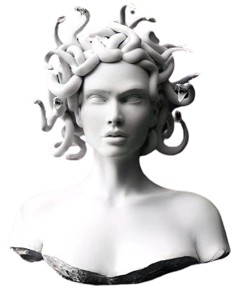

O que é
Mitologia?
Mitologia nada mais é que umconjunto de lendas criadas por um povo durante muitas gerações e elas eram usadas para explicar fenômenos que elesainda não eram capazes de entender. Por exemplo os gregos acreditavam que o movimento do sol durante o dia era causado pelo deus Hélio andando com sua carruagem solar pelo céu. A mitologia grega tem diversos deuses e heroís, muitas criaturas e várias histórias com profecias
